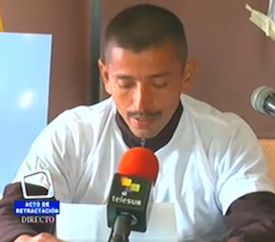
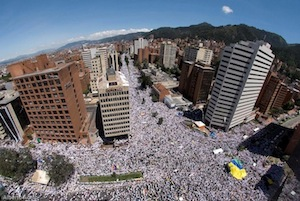

|
(Antigua, June 6) As the hemisphere's leaders concluded a summit today, more than 160 civil society organizations, representing hundreds of thousands of citizens in Mexico, Honduras, Guatemala, El Salvador, Nicaragua and the United States, sent an open letter to the OAS General Assembly calling for alternatives to the war on drugs and respect for human rights. "We call on our governments to acknowledge that failed security policies that have militarized citizen security have only exacerbated the problem, and are directly contributing to increased human suffering in the region,” the letter states. Read more.
By Emily Schmitz
In 2005, former President Álvaro Uribe publicly insinuated collaborative ties between the Peace Community of San José de Apartadó and guerrillas, accusations that would continue to threaten and endanger civilian lives. In July 2012 came renewed hope, revitalized by the release of Constitutional Court decision 164, which outlined five steps toward reparations, requiring state compliance under conditions negotiated between the Peace Community and the Colombian Interior Ministry. Initiating the process, an official retraction would occur in Bogota on May 29, led by President Juan Manuel Santos. But on the morning of the 29th, as Colombia’s philharmonic orchestra opened the ceremony with the national anthem, the void was evident: 32 empty chairs designated for community members remained untouched. President Santos would not be attending. Read more.
By Gina Spigarelli
On April 9, the National Day for Memory and Solidarity with Victims in Colombia, a massive march for peace was organized and carried out by the Marcha Patriotica social movement. According to many accounts, the march had more than a million participants, who travelled from various regions of the country to show civilian support for the peace process, regardless of political party. "It's not that we support Santos, it's not that we support the FARC," said one participant. "It's that we live in the middle of gunfire." Read more.
By Susana Pimiento
There was unprecedented Latin American participation at the third Global Day of Action on Military Spending, held on April 15. Service for Peace and Justice (SERPAJ) branches in Argentina, Brazil, Uruguay, Paraguay, Colombia and Chile organized actions that varied from workshops at schools (Curitiba, Brazil; near Buenos Aires, Argentina; Cabildo, Chile), and social media actions (Paraguay and Colombia), to rallies and distribution of flyers on busy intersections (Valparaiso and Coquimbo, Chile), and creation of murals (Santiago and Arica) and banners (San Antonio, Puerto Montt, Chile). Read more.
On May 26, Colombian government and guerrilla leaders announced a breakthrough accord on agrarian issues - arguably the most important of five issues on the negotiation table. Adam Isacson of the Washington Office on Latin America describes what led to the accord.
The seventh round of talks between the Colombian government and the Revolutionary Armed Forces of Colombia (FARC) guerrillas had ended with no agreement on the first of five agenda points, land and rural development. The eighth round, originally scheduled to begin April 2 in Havana, Cuba, was then delayed for three weeks. In fact, the “break” between April 2 and the next round’s April 23 launch turned out to be a period of intense activity. Read more. |